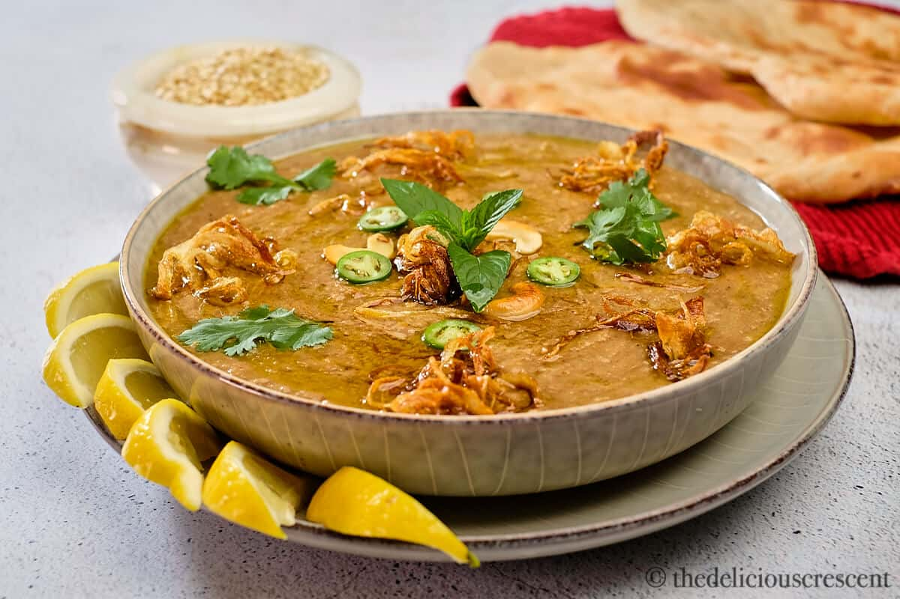

Haleem

Description of the dish
Haleem is a delicious pakistani dish which utilizes chicken and
lentils in a beautiful combination of the two. It can be made in a single day
and goes well with both rice and naan, and makes a great dish on its own.
Ingredients (yields 30 servings)
- 3 lbs thinly sliced beef
- 4 cups of water
- 1 lb cracked wheat
- 2 (8 ounce) containers of plain yogurt
- 1 cups of cooked rice
- 1/2 cup of yellow lentils
- 1/2 cup of white lentils
- 1/4 cup of ginger garlic paste
- 2 (1.76 oz) package garam masala
- 1 cups water, or more as needed
- salt to taste
Cooking Steps
-
Combine beef, water,
cracked wheat, yogurt,
cooked rice, yellow lentils,
white lentils, ginger-garlic paste,
and haleem masala in a pot.
Bring to a boil over medium heat,
while stirring often.
-
Reduce heat and simmer for 8 to 12 hours.
After 4 to 6 hours of cook time, check water level and
add 1 to 2 cups of water as needed so haleem does not get too thick.
Taste and season with salt to taste.
The haleem should have porridge consistency.